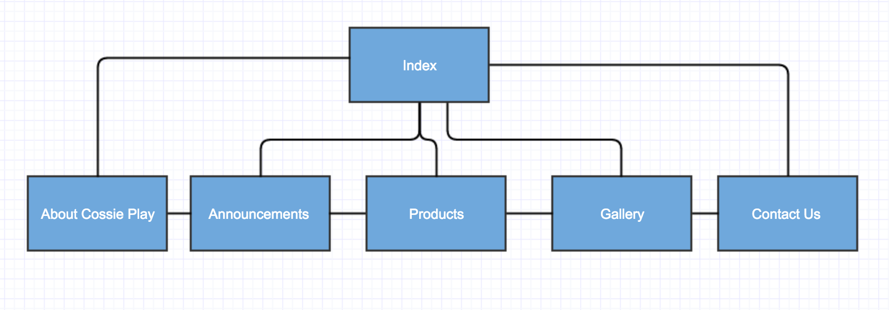

Name: Andre Sardino Arno
Login: jc347374
The goals of this project is to get more consumers to dress up as cosplayer and join the monthly - party held by Cossieplay, custom-made cosplay and fancy dress. Our client does not only resort to improves business but at the same time, the website promotes cosplay as an exciting way to dress up creatively and counter social awkwardness. Dressing up as cosplayer is only popular at the age of 35 - 50, which Cossieplay thinks that it supposed to be popular for younger adults and high school kids as well.
The overall theme and content of the project would be triump card to attract more clients. The theme should be simple just like black and white color. The content for every webpage should be straightforward and brief for clients to understand what does the website has.
The target audience of this project is for all ages to get dress up as cosplayer, not only focusing on the current consumer (Age 35 - 50). Therefore, our target audience should conquer in younger audience such as high school kids and younger adults.
 Site Flowchart